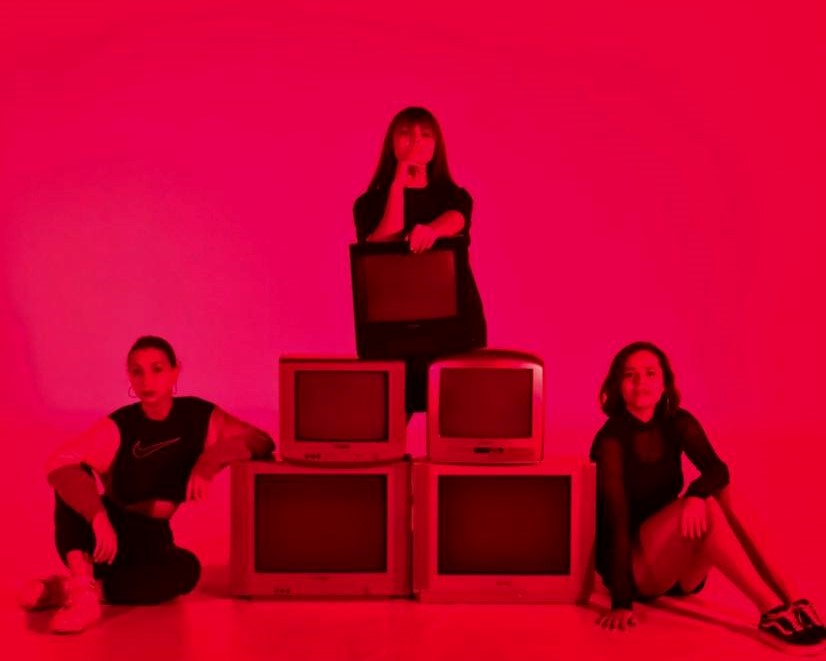
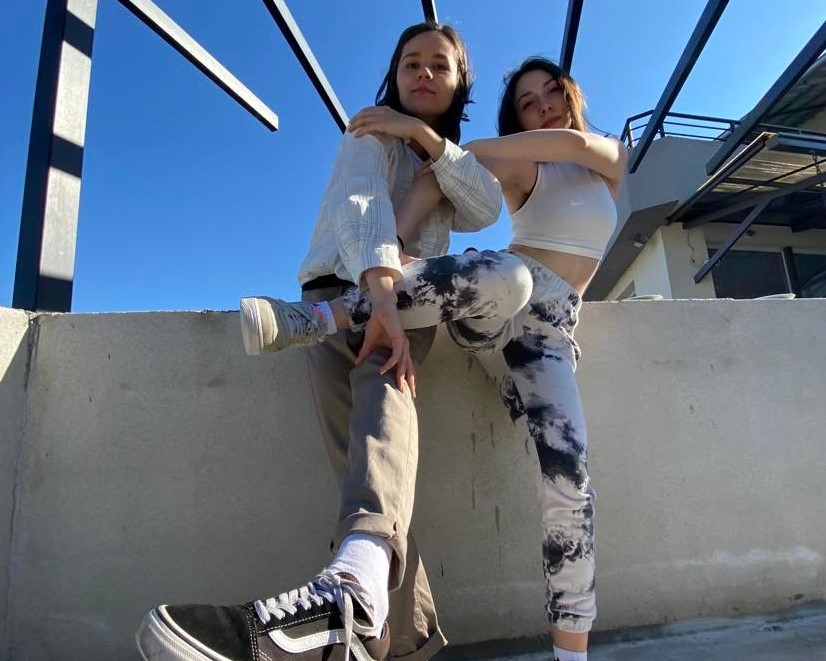
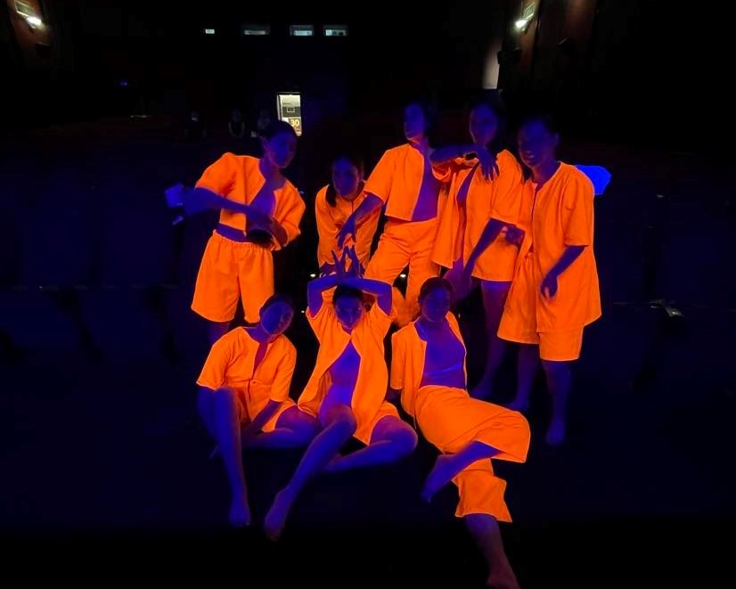
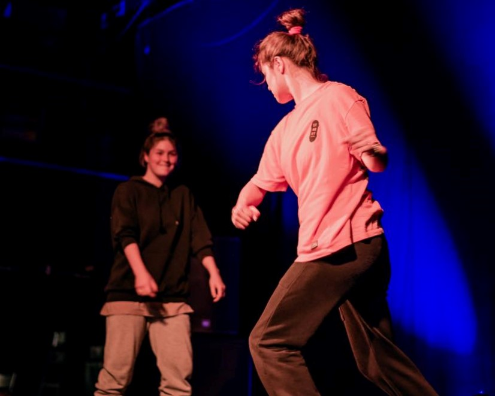
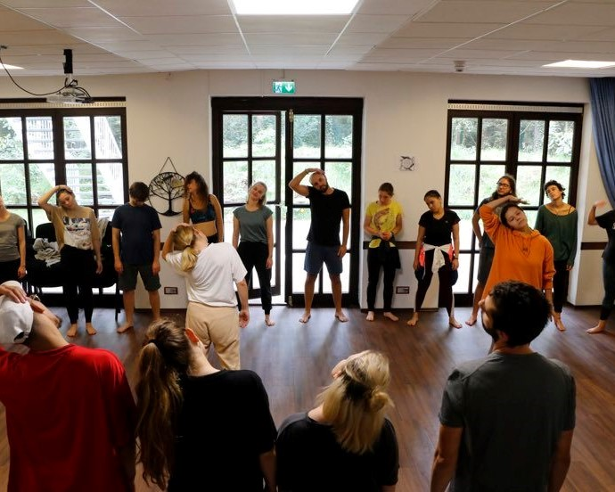
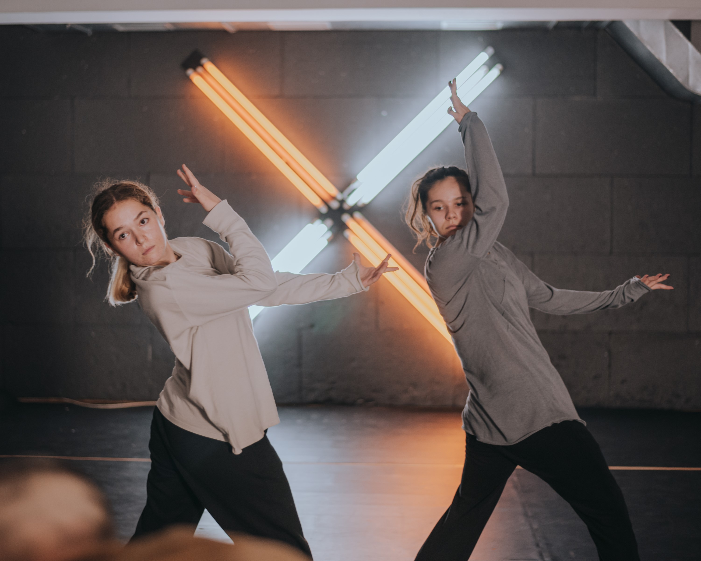
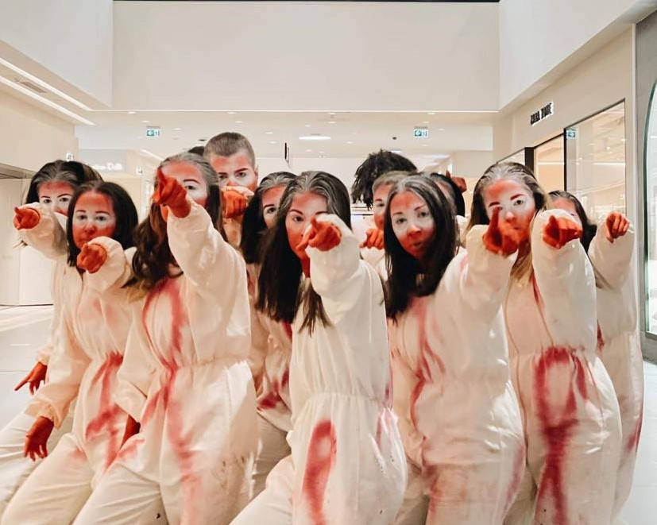
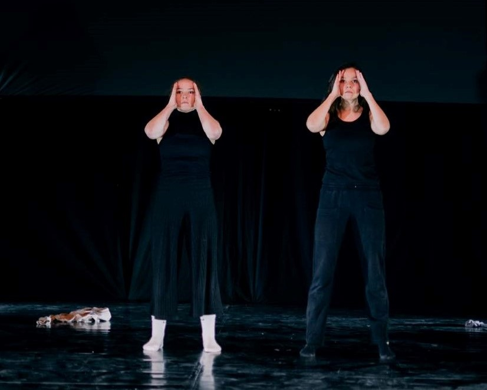

toj sum music video
Артист: 2Бона
Цел на учество на проектот беше можноста за нови искуства, соработка со нови тимови.
Крајниот резултат може да го погледнете
тука.
1.10.2020
Pro Light Studio, Скопје, С.Македонија

Talk to me music video
Артист: Андреа Коевска
Цел на учество на проектот беше можноста за нови искуства, соработка со нови тимови.
3.3.2021
Pro Light Studio, Скопје, С.Македонија

performance "inside"
Кореограф: Ивана Балабанова, Танчари: инструкторски тим на Битрикс
Опис: Перформанс со времетраење од 15 минути инспириран од
концепти на современа уметност.
Видео од целиот настан - Фестивал за современи танци може да погледнете
тука.
7.6.2021
Кино Милениум, Скопје

beatrix dance league
Организатор: Битрикс Културно-Уметнички Центар
Танцов камп кој се одржува секоја година, со работилници од странски и домашни кореографи со цел развивање на танцовата
сцена во С. Македонија -
BDL15.9.2021-16.9.2022
МКЦ, Скопје

United In Dance
Проект поддржан од организацијата Erasmus+ со тематика "United in Dance"
Настаните кои ги организираат Natur Kultur може да се погледнат на нивниот
Instagram
профил15.9.2022-24.9.2022
Бремен, Германија

Beatrix Specials Vol.5
Настан кој се одржува еднаш годишно во есенскиот период, каде сите заинтересирани
танчери за викенди можат да учествуваат на неколку-часовни работилници
водени од инструктори од Битрикс и останатите локални танцови студија
5.11.2022-24.12.2022
Beatrix Crew, Скопје

Заедно посилни
Организација: "
Заедно посилни" - друштво за поддршка за луѓето кои живеат со ХИВ
По повод Светски ден за борба против ХИВ, се одржаа настани за зголемување на свесноста на народот за овие луѓе
1.12.2021
East Gate Mall, ГТЦ, Плоштад Македонија

МКЦ КОНЦЕРТ
Концерт на кој се прикажаа крајни резултати од повеќето од завршените проекти
12.12.2021
МКЦ, Скопје